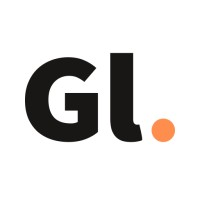
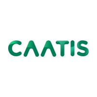
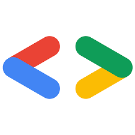

UI/UX Designer
Gizalab - UI/UX Design Agency · Internship
Bandung, Indonesia · RemoteSummary
As a participant of Merdeka Belajar Kampus Merdeka (MBKM) UI/UX, I gained in-depth experience in user experience (UX) and user interface (UI) design through a combination of theoretical learning and implementation in real projects.
Key Responsibilities
- Understand the principles of UI/UX designers, user research and science related to UI/UX
- Research and create UI/UX for wheels-on project
- Wheels-on is a car buying and selling website
- Built using figma tools with responsive design and implementing user experience
- Carry out usability testing on the final project
Tech Stack
Full-Stack Developer
Telkom University Languange Center(Lac) · Internship
Bandung, Indonesia · On-SiteSummary
As a FullStack Web Developer i am responsible for designing, developing and maintaining web-based applications for language learning platforms. I use the Python Django framework to build innovative and efficient application features.
Key Responsibilities
- UI/UX Design and Implementation
- Building a Language Practice and Test website
- Testing and Debugging
- Integration with External service
- Documentation and Maintenance
Tech Stack
Front-end Developer
HUMIC(Human Centric) - Engineering Research Center · Internship
Bandung, Indonesia · On-SiteSummary
As a Front-End Developer, I developed a website using the Vue.js framework. which aims to automatically detect eye diseases that allow users to access information and detection results quickly and efficiently
Key Responsibilities
- Developed a website using Vue.js with a modular and maintainable structure.
- Perform functional testing and debugging to ensure the application is running optimally.
- Compile development documentation.
Tech Stack
Front-end Developer
CAATIS(Center for Assesment abd Application of Technological Innovation for Society) · Researchship
Bandung, Indonesia · On-SiteSummary
I worked as a Front-End Developer on a web development project for Penelitian dan Pengabdian Masyarakat (PPM). Using the React.js, I contributed to building a functional and user-friendly platform that supports research and community service activities. This experience enhanced my skills in React.js development, web architecture, and collaboration with cross-functional teams.
Key Responsibilities
- Apply Component-Driven Development (CDD) principles to build modular and scalable systems.
- Connects the front-end with the backend through a RESTful API to retrieve and display data.
- Coordinate with backend and stakeholder teams to ensure appropriate development.
Tech Stack
Assistant Lecturer Human Computer Interaction

Telkom University · Contract
Bandung, Indonesia · RemoteSummary
As a Teaching Assistant for the Human and Computer Interaction (IMK) course in the Informatics class, I am responsible for assisting the lecturer in the teaching process, providing guidance to students, and ensuring their understanding of UI/UX concepts. I also assist in assisting practical sessions, as well as evaluating student assignments to ensure the application of theory into real projects.
Key Responsibilities
- Assist lecturers by responding to material related to UI/UX
- Guiding students in creating UI prototypes using Figma and other design tools
- Assist in the preparation of discussion forums and provide consultation to students regarding major assignments.
Tech Stack
Member as Mobile Developer
GDoC(Google Developer Group on Campus) - Telkom University · Member
Bandung, Indonesia · RemoteSummary
As a Mobile Developer member at GDGoC - Telkom University, I am responsible for designing, developing and optimizing mobile applications that are aligned with industry best practices and Google Developer guidelines.
Key Responsibilities
- Access to classes and the features provide
- Participate in webinars and seminar helds
- Attend available bootcamps